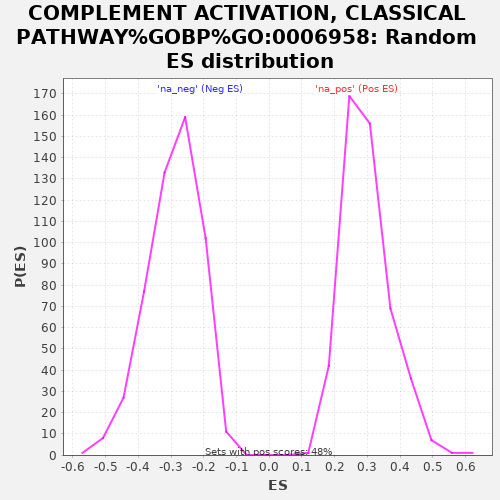

| | | Dataset | rankedList |
| Phenotype | NoPhenotypeAvailable |
| Upregulated in class | na_neg |
| GeneSet | COMPLEMENT ACTIVATION, CLASSICAL PATHWAY%GOBP%GO:0006958 |
| Enrichment Score (ES) | -0.75595087 |
| Normalized Enrichment Score (NES) | -2.5944858 |
| Nominal p-value | 0.0 |
| FDR q-value | 0.0 |
| FWER p-Value | 0.0 |
Table: GSEA Results Summary
 Fig 1: Enrichment plot: COMPLEMENT ACTIVATION, CLASSICAL PATHWAY%GOBP%GO:0006958
Fig 1: Enrichment plot: COMPLEMENT ACTIVATION, CLASSICAL PATHWAY%GOBP%GO:0006958
Profile of the Running ES Score & Positions of GeneSet Members on the Rank Ordered List
| PROBE | GENE SYMBOL | GENE_TITLE | RANK IN GENE LIST | RANK METRIC SCORE | RUNNING ES | CORE ENRICHMENT | | 1 | C4B | | | 732 | 0.300 | -0.0124 | No |
| 2 | C1S | | | 1200 | 0.227 | -0.0173 | No |
| 3 | SERPING1 | | | 1464 | 0.203 | -0.0136 | No |
| 4 | C8G | | | 2010 | 0.170 | -0.0274 | No |
| 5 | MBL2 | | | 3086 | 0.129 | -0.0723 | No |
| 6 | C1QA | | | 3090 | 0.129 | -0.0614 | No |
| 7 | C5 | | | 3879 | 0.108 | -0.0931 | No |
| 8 | C8B | | | 4102 | 0.103 | -0.0958 | No |
| 9 | C1QB | | | 4841 | 0.087 | -0.1268 | No |
| 10 | MASP2 | | | 6720 | 0.050 | -0.2202 | No |
| 11 | C1R | | | 7577 | 0.033 | -0.2619 | No |
| 12 | C4BPB | | | 8456 | 0.017 | -0.3062 | No |
| 13 | C3 | | | 8692 | 0.012 | -0.3173 | No |
| 14 | CD46 | | | 8714 | 0.012 | -0.3174 | No |
| 15 | C1QBP | | | 9090 | 0.005 | -0.3364 | No |
| 16 | CR1 | | | 9264 | 0.002 | -0.3453 | No |
| 17 | CD55 | | | 9637 | -0.005 | -0.3642 | No |
| 18 | IGHE | | | 10241 | -0.017 | -0.3941 | No |
| 19 | IGLL1 | | | 10776 | -0.027 | -0.4196 | No |
| 20 | CLU | | | 10818 | -0.028 | -0.4193 | No |
| 21 | C2 | | | 11787 | -0.048 | -0.4656 | No |
| 22 | C1QC | | | 12617 | -0.067 | -0.5030 | No |
| 23 | C4BPA | | | 13147 | -0.079 | -0.5238 | No |
| 24 | SUSD4 | | | 13621 | -0.090 | -0.5406 | No |
| 25 | C1RL | | | 13682 | -0.092 | -0.5359 | No |
| 26 | IGHV7-81 | | | 14560 | -0.113 | -0.5719 | No |
| 27 | APCS | | | 16012 | -0.151 | -0.6344 | No |
| 28 | IGHV1OR15-9 | | | 16132 | -0.155 | -0.6274 | No |
| 29 | IGKV5-2 | | | 17792 | -0.220 | -0.6949 | No |
| 30 | CR2 | | | 18967 | -0.344 | -0.7265 | Yes |
| 31 | IGHV3OR16-8 | | | 19198 | -0.635 | -0.6841 | Yes |
| 32 | IGKV2D-28 | | | 19222 | -0.847 | -0.6128 | Yes |
| 33 | IGHV1OR15-1 | | | 19228 | -0.951 | -0.5317 | Yes |
| 34 | IGHV3-35 | | | 19231 | -0.970 | -0.4488 | Yes |
| 35 | IGKV3D-20 | | | 19236 | -1.074 | -0.3571 | Yes |
| 36 | IGHV3-73 | | | 19237 | -1.114 | -0.2617 | Yes |
| 37 | IGHV3-74 | | | 19245 | -1.345 | -0.1470 | Yes |
| 38 | IGHV3-43 | | | 19253 | -1.725 | 0.0003 | Yes |
Table: GSEA details [plain text format]

Fig 2: COMPLEMENT ACTIVATION, CLASSICAL PATHWAY%GOBP%GO:0006958: Random ES distribution
Gene set null distribution of ES for COMPLEMENT ACTIVATION, CLASSICAL PATHWAY%GOBP%GO:0006958